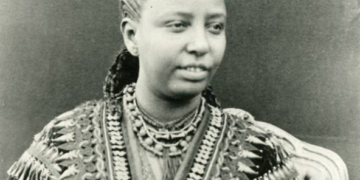
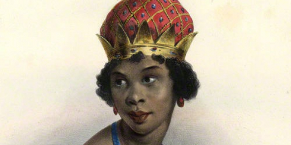
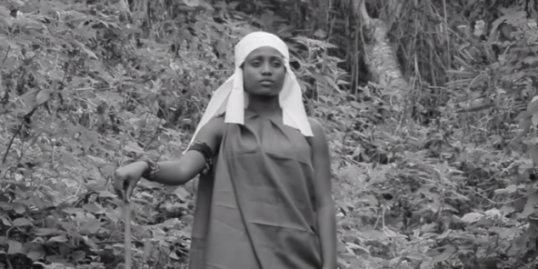
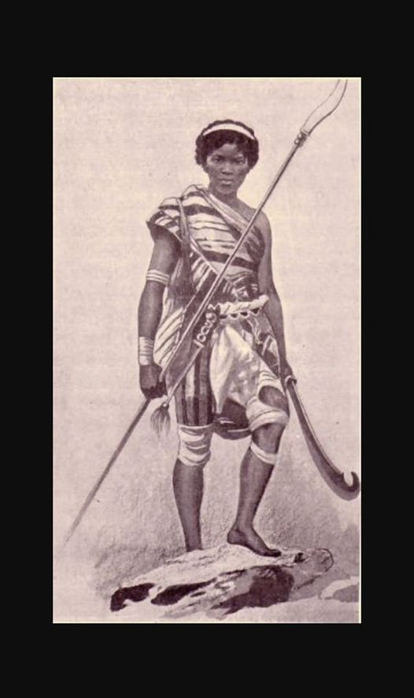
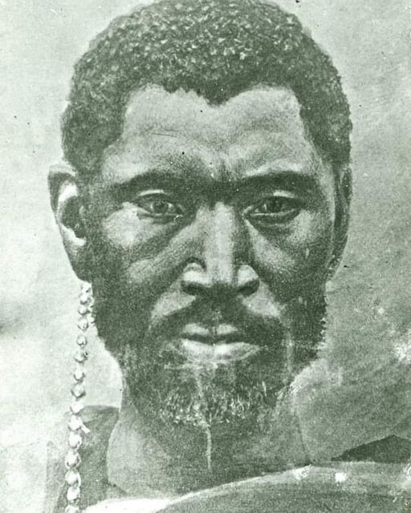
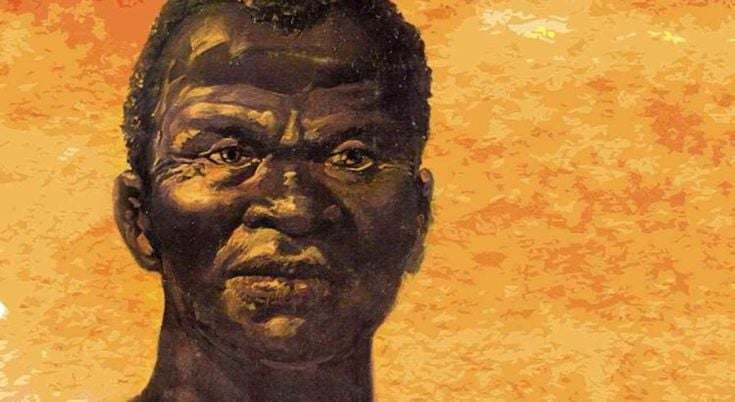
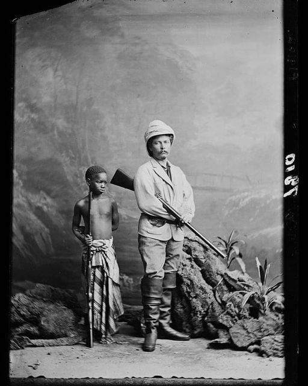
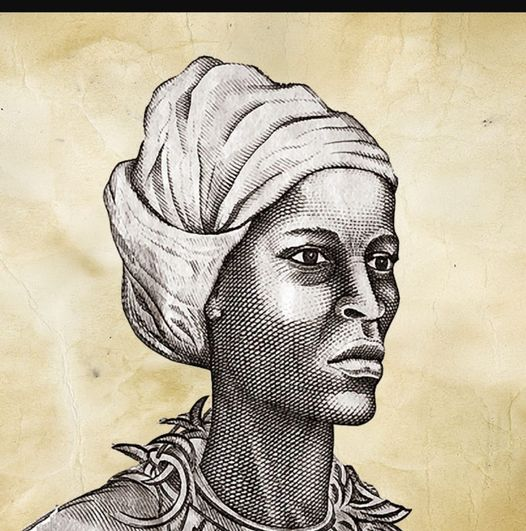
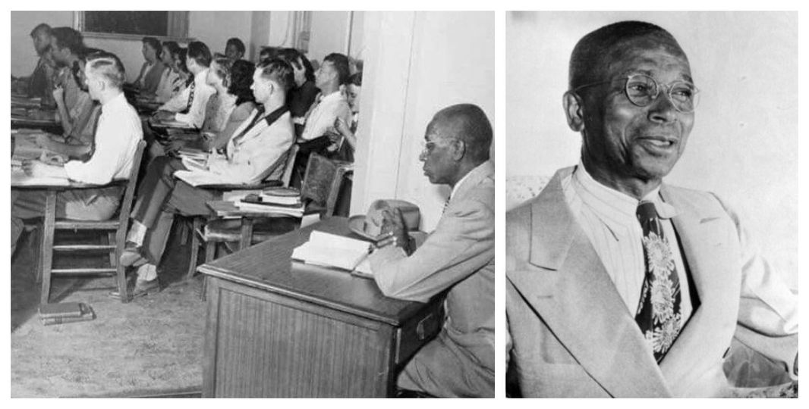
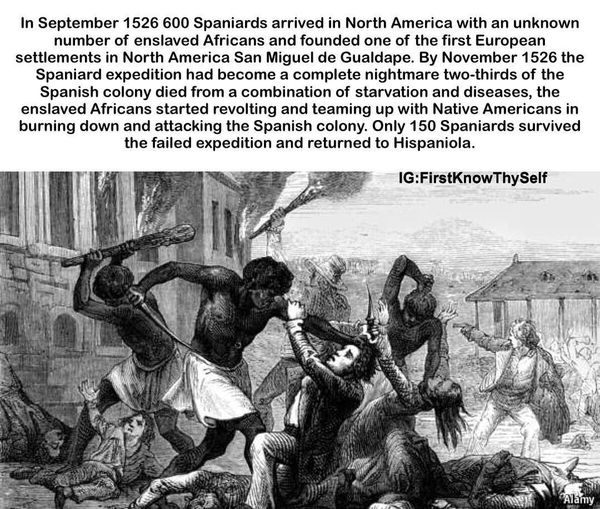

20 January, 2020
Taytu Betul
Symbole du panafricanisme, Addis-Abeba, capitale de l’Éthiopie et siège de l’UA, a été fondée par une femme : Taytu Betul. La même qui avait joué un rôle fondamental dans la victoire éthiopienne face à l’invasion italienne, en 1896.
Lire son histoire
20 January, 2020
Kahina, Reine berbère
De sa forteresse dans les Aurès, la souveraine combattit farouchement les envahisseurs arabes. Plus de 1 300 ans après sa mort, elle demeure le symbole de la résistance amazigh.
Lire son histoire

20 January, 2020
Anne Zingha
Au XVIIe siècle, Anne Zingha règne sur les royaumes de l’actuel Angola et parvient à éviter la colonisation de son pays. Une icône angolaise et panafricaine de la résistance à l’impérialisme européen.
Lire son histoire

20 January, 202:0
Kimpa Vita
Brûlée vive sur un bûcher, la prophétesse Kimpa Vita a libéré la fierté de l’identité noire et porté une foi émancipatrice sur un continent en proie à l’oppression.
Lire son histoire
20 January, 2020
Aline Sitoe Diatta OU La dame de Kabrousse
Aline Sitoé Diatta (née en 1920 à Kabrousse, dans le Sud du Sénégal et morte en 1944 à Tombouctou, au Mali) est une héroïne de la résistance casamançaise. On la surnomme parfois la « Jeanne d'Arc d'Afrique »..
Lire son histoire
20 January, 2020
Nat Turner, le révolté. Assassiné le 11 Nov 1831
Avez-vous entendu parler de Nat Turner? Ce grand combattant qui mena l'une des plus grandes révoltes aux Etats Unis d'Amérique contre les esclavagistes blancs.»..
Lire son histoire
20 January, 2020
Cicely Tyson.
Née à Harlem en ce jour du 19 décembre 1924, la grande actrice activiste noire Américaine Cicely Tyson, est la première femme noire à porter des tresses à la télévision Américaine.
Lire son histoire

20 January, 2020
Cicely Tyson.
Troupes d’élite féminines, les femmes soldats du Dahomey, appelées aussi Agon’djié, qui signifie « Ote-toi de là ; fais-moi place » en langue fon, ont contribué à la puissance militaire du Royaume du Dahomey aux 18e et 19e siècles.
Lire leur histoire




20 January, 2020
Fouta Toro
Les deux premiers hommes qui ont aboli l’esclavage sont des africains sénégalais du Fouta toro.
Lire son Histoire

20 January, 2020
Carlota Lucumi déclenche une violente insurrection contre les esclavagistes blancs
Il y a exactement 178 ans aujourd'hui que la Grande Carlota Lucumi a déclenché une violente insurrection contre les terroristes esclavagistes en ce jour du 5 novembre 1843.
Lire son Histoire
20 January, 2020
Sidya DIOP
Sidya DIOP, fils de la Reine Ndatté Yalla Mbodj, un des plus grands héros de la résistance
Lire son Histoire
20 January, 2020
Amina de Zaria
Il y a 411 ans aujourd'hui que la légendaire Amina de Zaria est morte, en ce jour du 29 octobre 1610. Amina de Zaria appelée aussi « la reine guerrière » était une des plus grandes guerrières que la terre ait jamais connu au 16e siècle.
Lire son Histoire

20 January, 2020
George McLaurin était le premier noir autorisé à étudier aux États-Unis.
MEMOIRES
Lire la Mémoire


20 January, 2020